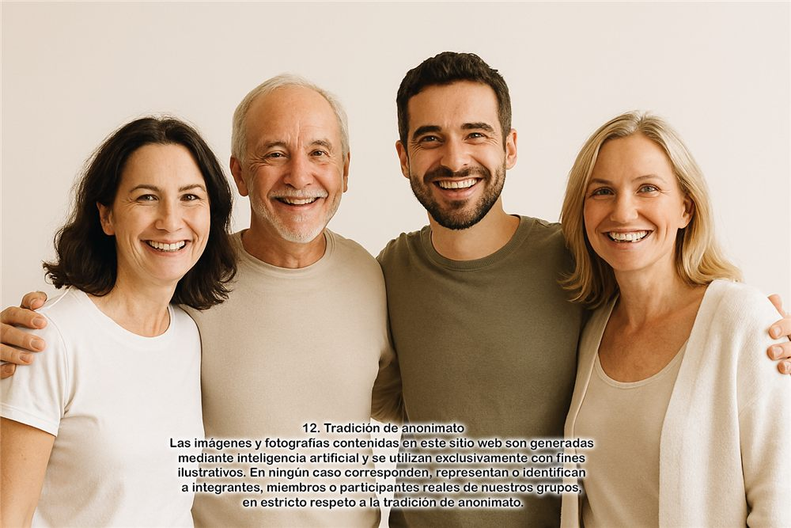
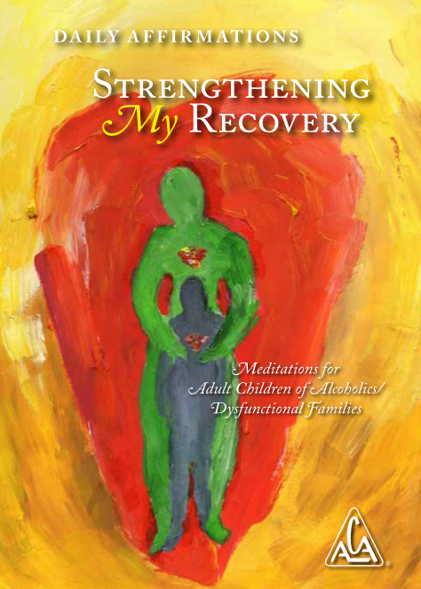

Un espacio para compartir
Las reuniones están dedicadas a compartir experiencias y estudiar literatura de ACA. Su duración habitual es de 90 minutos.

Un espacio para compartir y recuperarnos juntos.
Hijos adultos de alcohólicos (ACA) y/o familias disfuncionales es un programa de Doce Pasos y Doce Tradiciones para hombres y mujeres que crecieron en hogares disfuncionales.
Nos reunimos para compartir nuestra experiencia de crecer en un entorno donde el abuso, el abandono y el trauma estuvieron presentes.
Consulta los horarios de nuestras reuniones en la agenda.
Bienvenido. En ACA compartimos nuestra experiencia de crecer en familias alcohólicas o disfuncionales y trabajamos los Doce Pasos para avanzar en nuestra recuperación y aprender a ser nuestros propios padres amorosos.
Las reuniones están dedicadas a compartir experiencias y estudiar literatura de ACA. Su duración habitual es de 90 minutos.
Abre Zoom desde tu celular o computadora y ten a mano el ID y la contraseña que aparecen arriba. Busca un lugar tranquilo y usa audífonos si puedes.
Pregunta cómo es una reunión, cómo participar o si puedes asistir solo a escuchar.
Consultar en WhatsApp (abre el grupo en una nueva pestaña) El enlace abre el grupo de WhatsApp.Horarios de Ciudad de México (America/Mexico_City). Duración habitual: 90 minutos.
10:30 a. m.
Capítulo III · Gran Libro Rojo
7:00 a. m.
Gran Libro Rojo
7:00 a. m.
Gran Libro Rojo
8:00 p. m.
Libro Amarillo
7:00 p. m.
Promesas ACA
7:00 a. m.
Oración y meditación
9:30 a. m.
Tradiciones
7:00 a. m.
Grupo de estudio · La Guía del Padre Amoroso
8:00 p. m.
GLR, capítulo 8: Trabajando la solución. Primer domingo del mes: Orador ACA.
8:00 a. m.
Reunión de trabajo · segundo sábado de cada mes

Meditación diaria¿Te gusta la meditación diaria? Puedes conseguirla en formato físico , digital o electrónico .
Un niño adulto es alguien que responde a las situaciones adultas con duda, culpa o un sentido de estar equivocado o ser inferior. Todo aprendido en las etapas de su niñez. Sin ayuda, funcionamos inconscientemente con pensamientos y juicios ineficaces de adultos. La regresión puede ser sutil, pero está allí, saboteando nuestras decisiones y relaciones actuales.
Este programa también usa una estructura de Doce Pasos, similar a Alcohólicos Anónimos, pero enfocada en sanar las heridas emocionales y conductuales que deja haber crecido en un hogar disfuncional o con padres alcohólicos.
Cada lista presenta patrones que podemos reconocer en nuestra vida. Su “otra cara” describe cambios durante la recuperación. Puedes empezar por la lista de lavandería y después explorar su otra cara, a tu ritmo.
Las selecciones son una herramienta de reflexión personal, sin puntuación. No se guardan ni se envían.
Reconocer nuestras respuestas aprendidas y explorar cambios de recuperación.
Explora 14 características que ayudan a reconocer cómo las experiencias de la infancia pueden influir en nuestras relaciones y en la vida adulta.
Marca las características con las que te identificas. Puedes cambiar tu selección cuando quieras; no se guarda ni se envía.
Resumen en palabras sencillas de la lista de ACA. Leer el texto oficial completo (PDF).
Describe cambios en la manera de relacionarnos con nosotros mismos y con los demás durante la recuperación.
Texto del documento compartido. Marca los cambios que reconoces en tu proceso. Puedes cambiar tu selección cuando quieras; no se guarda ni se envía.
Cada fila reúne un resumen del patrón y el texto de recuperación del PDF compartido. Puedes leerlos sin marcar ninguna opción.
| N.º | Patrón para reconocer | Cambio de recuperación |
|---|
Reflexionar sobre patrones en nuestras relaciones y sus cambios de recuperación.
Una mirada complementaria a los patrones que podemos repetir en nuestras relaciones. Explora las características y consulta el documento completo en español.
Marca las características con las que te identificas. Puedes cambiar tu selección cuando quieras; no se guarda ni se envía.
Resumen en palabras sencillas de la otra lista de ACA. Leer el texto completo en español (PDF).
Presenta cambios relacionados con el miedo, el aislamiento y el control, y una manera más compasiva de relacionarnos.
Texto del documento compartido. Marca los cambios que reconoces en tu proceso. Puedes cambiar tu selección cuando quieras; no se guarda ni se envía.
Cada fila reúne un resumen del patrón y el texto de recuperación del PDF compartido. Puedes leerlos sin marcar ninguna opción.
| N.º | Patrón para reconocer | Cambio de recuperación |
|---|
En ACA, lo que se llama “El Problema” es una declaración central que describe la experiencia común de los hijos adultos de familias disfuncionales o alcohólicas. Es una especie de resumen emocional y psicológico que ayuda a las personas a identificarse con el programa.
"La Solución ACA" es una parte central del programa. Es una descripción de cómo el proceso de recuperación en ACA ayuda a cambiar la vida de quienes participan.
Todo grupo de ACA debe mantenerse completamente a sí mismo, negándose a recibir contribuciones ajenas. Las oficinas de servicios se basan en la séptima tradición de autoconservación de ACA, pero según la séptima tradición, la Oficina de Servicio Mundial (WSO), sólo aceptan aportes de miembros, grupos/reuniones o intergrupos. Nuestras contribuciones y aportaciones son para que ACA pueda seguir pasando el mensaje a más niños adultos.
Cualquier información puedes escribirnos a nuestro email: comenzardenuevogdl@gmail.com
Ir a sitio oficial de ACA https://adultchildren.org/